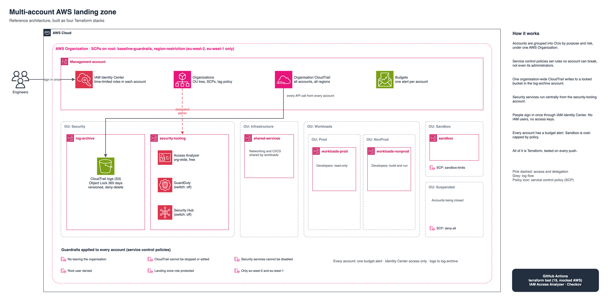

Walkthrough in five parts: what each piece does, why it was built that way, and how to talk about it in an interview.
Repo: github.com/gumagatsby/aws-landing-zone

An AWS account is the strongest boundary AWS offers. Something that goes wrong in one account (a leaked key, a runaway cost, a deleted resource) does not reach another. So the landing zone gives each job its own account and groups them into organisational units (OUs) by purpose and risk:
| OU | Accounts | Why it is separate |
|---|---|---|
| Security | log-archive, security-tooling | Evidence and security tools live where almost nobody has access |
| Infrastructure | shared-services | Networking and CI/CD that workloads share |
| Workloads/Prod | workloads-prod | Production gets the strictest access |
| Workloads/NonProd | workloads-nonprod | Developers build and test freely |
| Sandbox | sandbox | Experiments, capped so they cannot get expensive |
| Suspended | (none yet) | Holding place for accounts being closed: everything denied |
The management account runs Organizations, Identity Center, the organisation trail and budgets, and nothing else.
An SCP is a ceiling on what anyone in an account can do, including that account's administrator. It does not grant anything; it only takes away. Four policies are in policies/scp/:
| Policy | Attached to | What it stops |
|---|---|---|
| baseline-guardrails | Whole organisation | Leaving the organisation; stopping or editing CloudTrail; disabling GuardDuty, Security Hub, Access Analyzer, Config; anything by the root user; tampering with the landing zone role; loosening S3 public access blocks |
| region-restriction | Whole organisation | Any region except London (eu-west-2) and Ireland (eu-west-1). Global services exempt |
| sandbox-limits | Sandbox OU | NAT gateways, clusters, reserved capacity, Direct Connect, instances bigger than t3/t4g |
| deny-all-suspended | Suspended OU | Everything |
{ "Sid": "ProtectAuditTrail", "Effect": "Deny",
"Action": ["cloudtrail:DeleteTrail", "cloudtrail:StopLogging", ...],
"Resource": "*",
"Condition": { "ArnNotLike": { "aws:PrincipalArn": "arn:aws:iam::*:role/OrganizationAccountAccessRole" } } }
The pattern to notice: deny the dangerous action for everyone except the landing zone's own role, so the platform team can still run it. These are deny-lists, so new AWS services keep working without editing the policies.
enable_guardduty and enable_security_hub switches that default to off, because they bill after 30 days.People sign in once through IAM Identity Center and pick an account and role. Nobody has an IAM user or an access key. Access is a table in code:
| Group | Permission set | Accounts |
|---|---|---|
| platform-admins | PlatformAdmin (4-hour sessions) | All |
| developers | Developer (PowerUser, no IAM changes) | nonprod, sandbox |
| developers-prod-readonly | ReadOnly | prod |
| security-auditors | SecurityAudit | All |
| finance | Billing | Management only |
| Check | What it proves | Result |
|---|---|---|
| terraform test with a mocked AWS provider | The logic and wiring: accounts in the right OU, guardrails attached in the right place, paid services off by default, developers cannot change production, bad input rejected | 19 of 19 pass |
IAM Access Analyzer ValidatePolicy | Every SCP is valid by AWS's own rules and under the 5,120-character limit | 0 findings on all 4 |
| Checkov | No security misconfigurations; deliberate exceptions documented | Pass |
CI calls Access Analyzer through a role that can do exactly one thing: access-analyzer:ValidatePolicy. It logs in with OIDC, pinned to this repository's IDs.
s3:DeleteAccountPublicAccessBlock is not a real IAM action (removing the block is covered by the "put" permission), and the root-user rule should use an ARN operator, not a string one. Both fixed.["*"]) check compared a list with a tuple, which Terraform never treats as equal, so * was looked up as an account name. It would have failed at plan time in a real deployment. Fixed with contains()."Why not Control Tower?"
Control Tower is a good choice when a team wants AWS to own the landing zone. I wanted every guardrail in code review and Git history, testable in CI, and without the per-evaluation cost of the Config rules Control Tower adds. I'd recommend Control Tower for a client who wants Account Factory and the managed controls library and has no one to maintain Terraform.
"What is the difference between an SCP and an IAM policy?"
IAM policies grant permissions to a user or role. SCPs never grant anything: they set the maximum anyone in an account can do. Even an account's administrator cannot exceed them, which is why they are used for guardrails.
"How do you stop someone deleting the audit logs?"
Five layers: the logs live in a separate account; an SCP stops anyone stopping or editing the trail; Object Lock blocks deletion for 365 days; the bucket policy denies delete actions; and log file validation proves nothing was altered.
"Why governance mode, not compliance mode, for Object Lock?"
Compliance mode cannot be overridden or shortened by anyone, including the root user. That suits regulated retention, but on a first deployment a wrong retention setting would be permanent. Governance mode still blocks normal deletion and keeps an emergency path.
"How would you onboard a new team?"
Add an account to the map in stack 01, pick its OU, and it inherits the guardrails immediately. Then add it to the right groups in stack 04. The trail, Access Analyzer and (if on) GuardDuty cover it automatically.
"How did you test SCPs without an organisation?"
Three layers: Terraform's native tests against a mocked provider for the wiring, IAM Access Analyzer for the policy grammar, and Checkov for misconfiguration. The tests found a real bug before anything was deployed.
| Check | Result |
|---|---|
| terraform test, 4 stacks | 19 of 19 pass (7, 4, 3, 5) |
| IAM Access Analyzer, 4 SCPs | 0 findings; largest is 1,607 of 5,120 characters |
| Checkov | Pass, with 8 documented exceptions |
| CI on GitHub | Green: 4 stack jobs, Checkov, policy validation |
| Applied to AWS | Only the validate-only CI role (2 resources). The organisation itself is not applied, to keep the account on the Free plan |